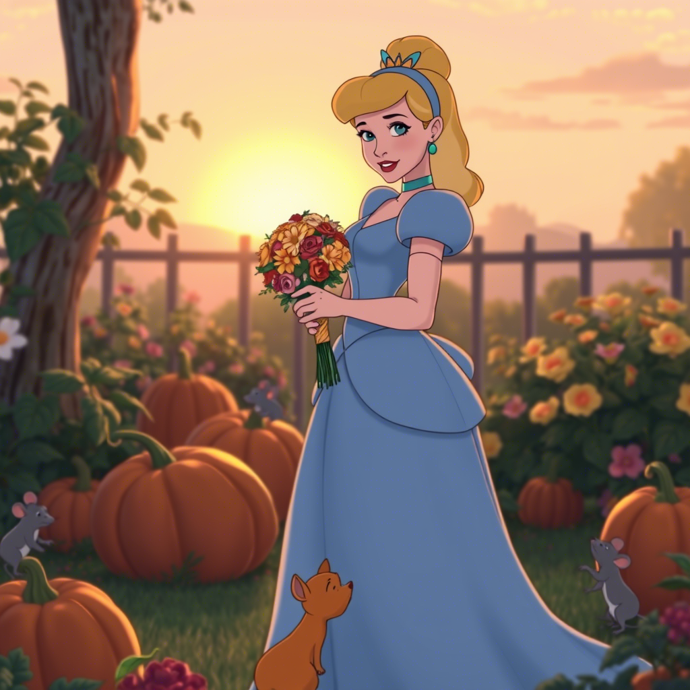
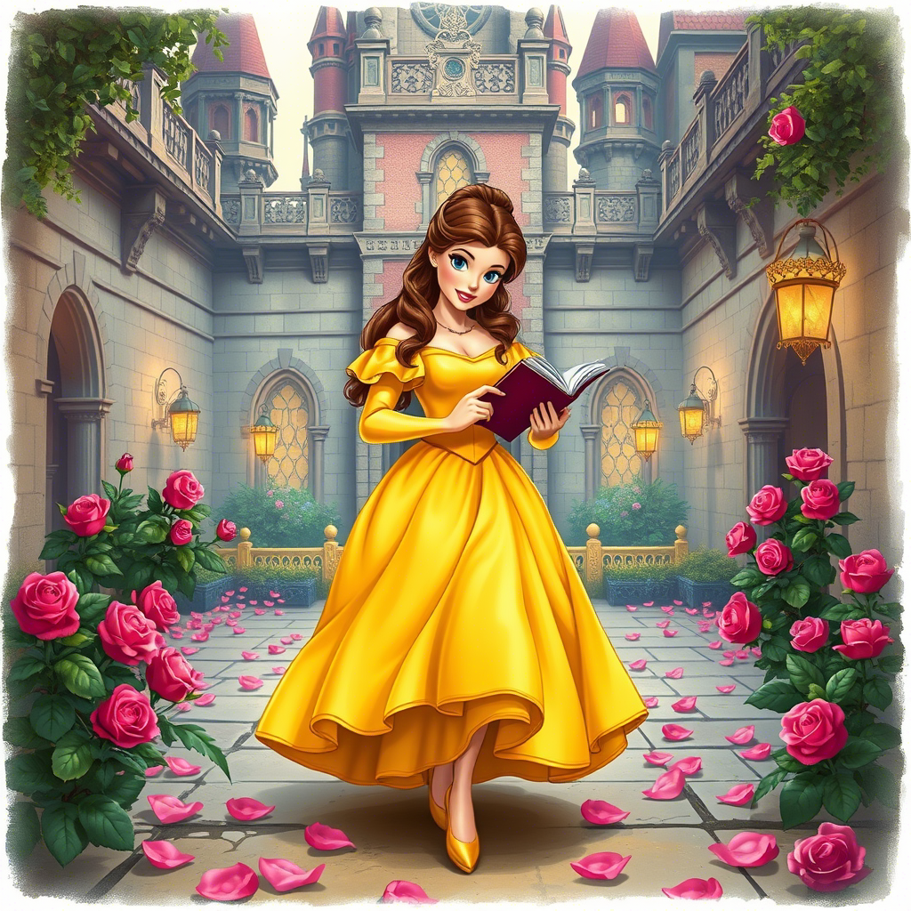
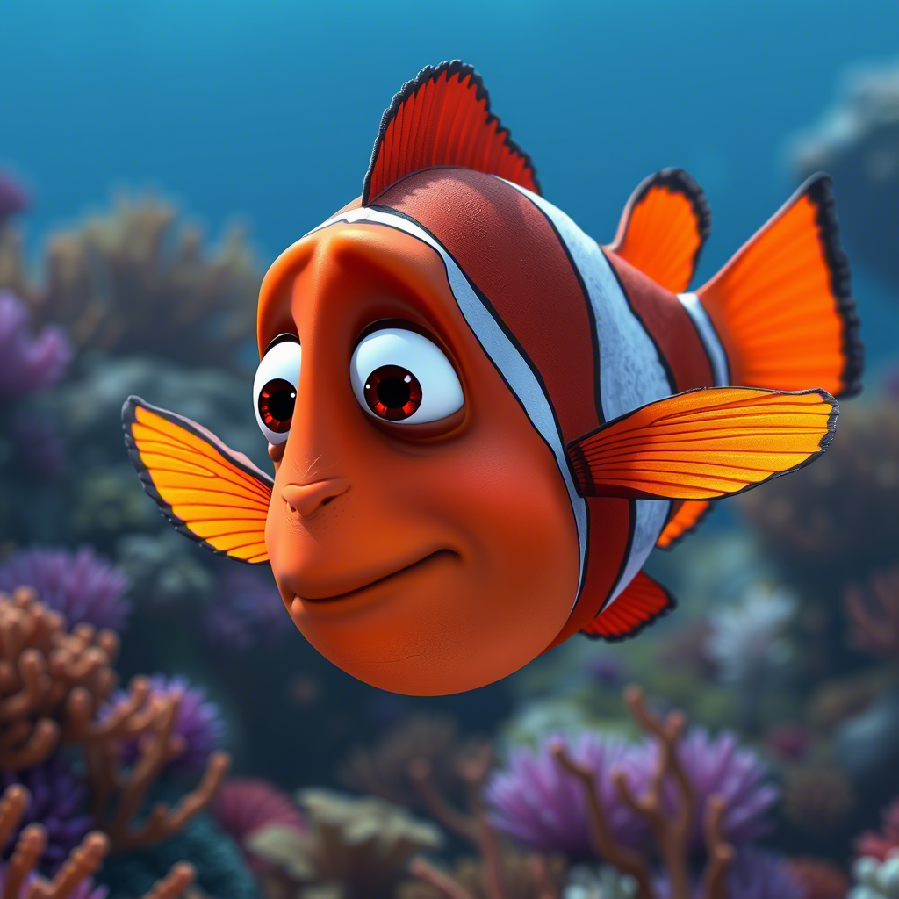
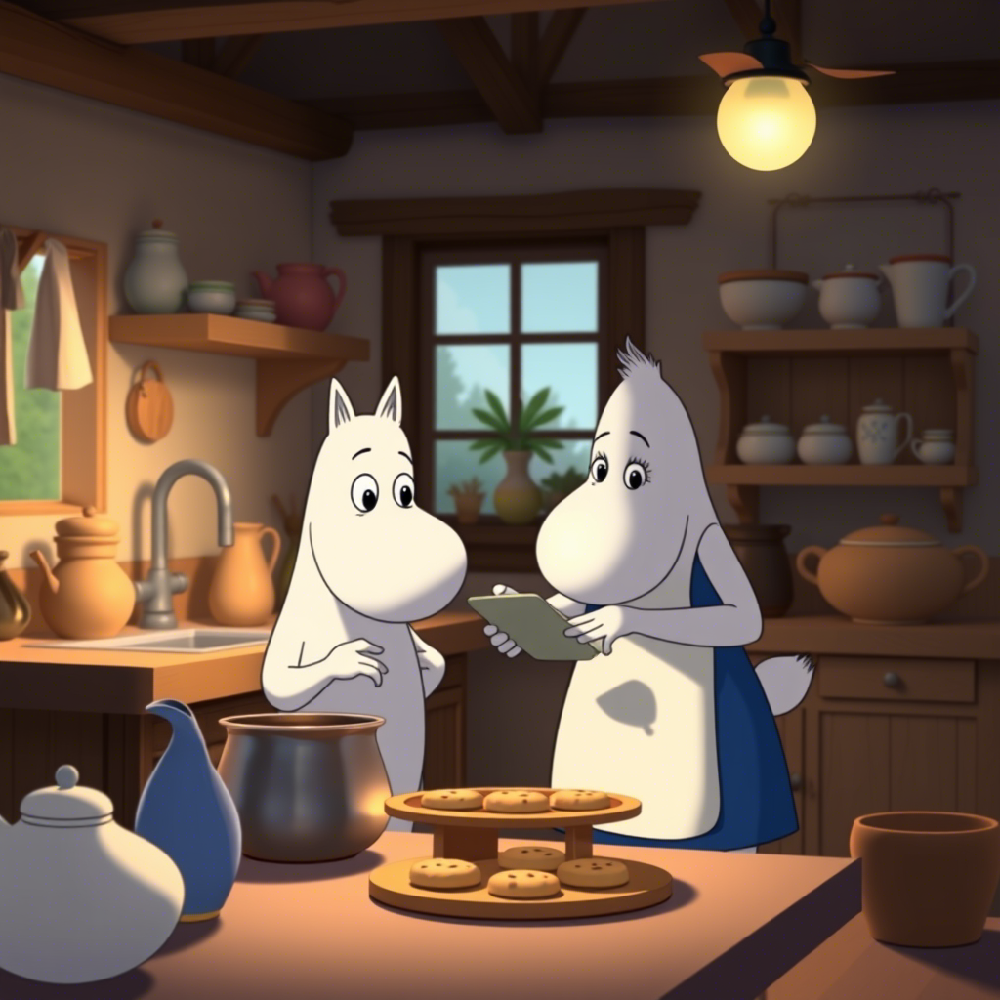
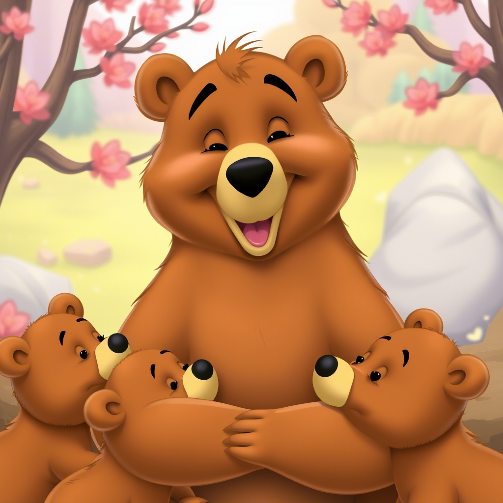
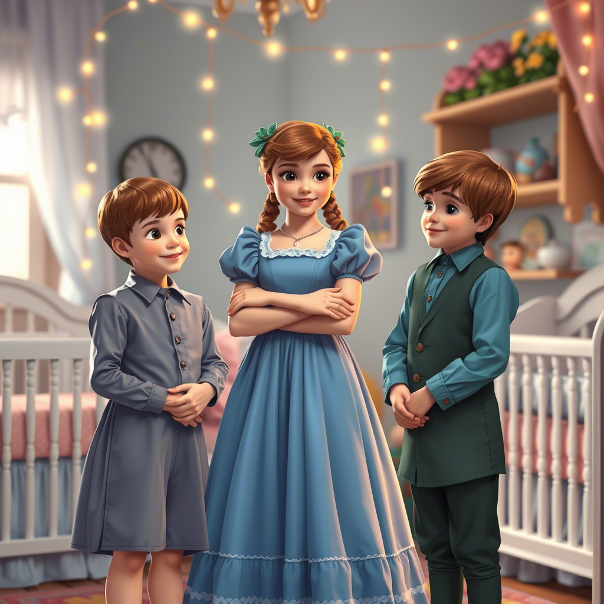
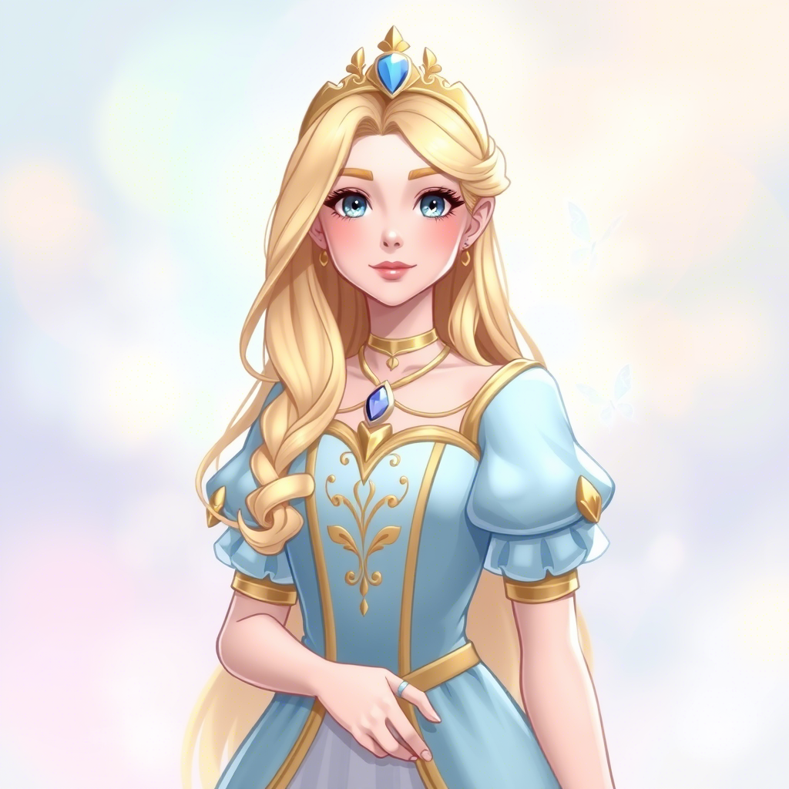
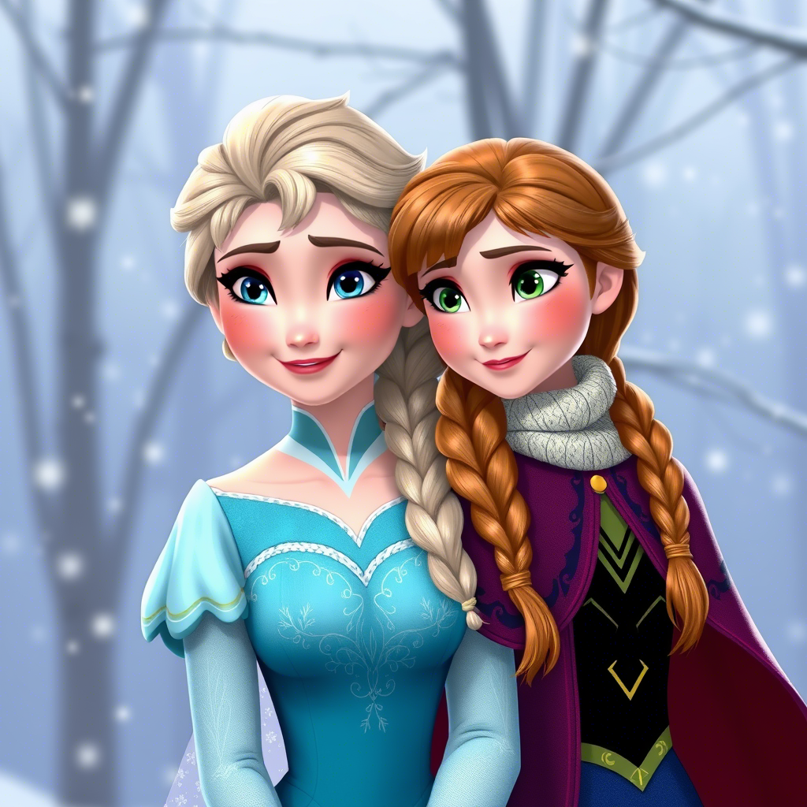
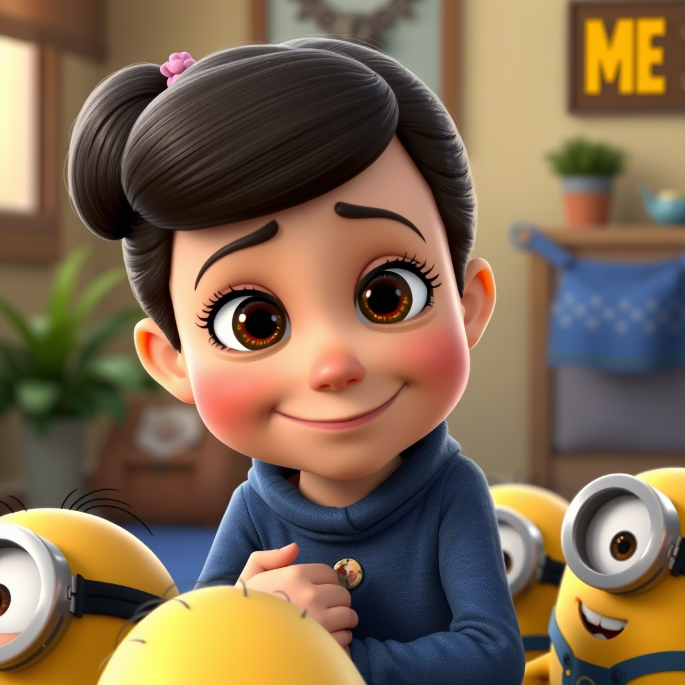

Золушка ("Золушка", Disney)
Символ терпения и доброты. Она сохраняет тепло в доме, несмотря на трудности, и её забота становится опорой для всех вокруг.

Белль ("Красавица и Чудовище", Disney)
Нежная и эмпатичная, она превращает дом в уютное пространство, а её мудрость и доброта помогают даже самым одиноким сердцам.

Марлин ("В поисках Немо", Pixar)
Как заботливая мать, она готова на всё ради близких, даря тепло даже в самые тревожные моменты.

Муми-мама ("Муми-тролли")
Воплощение домашнего уюта. Она создает атмосферу, где каждый чувствует себя защищённым, а её пироги — символ заботы.

Мама-медведица («Медведь Йоги») — заботливая и добрая, всегда поддерживает Йоги и Бообу.

Венди Дарлинг ("Питер Пэн", Disney)
Как старшая сестра, она оберегает братьев, превращая даже приключения в историю, наполненную теплом и заботой.

Сельма ("София Прекрасная")
Мудрая и нежная, она учит других ценить домашний уют и поддерживать гармонию в семье.
Леди ("Леди и Бродяга", Disney)
Аристократичная, но с глубокой привязанностью к дому. Её любовь к комфорту и забота о других делают её опорой для близких.

Анна ("Холодное сердце", Disney)
Её безграничная преданность сестре и готовность ради неё на всё показывают, что доброта — её главная сила.

Матильда ("Гадкий я")
Нежная и отзывчивая, она сохраняет свет в семье, напоминая, что даже в хаосе важно оставаться доброй.